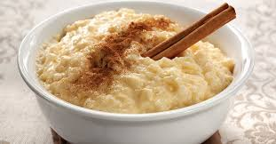

Arroz con leche
05 Enero 2018
Empecemos por decir que el arroz es un cereal -vale decir que uno de los más completos- desprovisto de colesterol y con una carga importante de fibra y de energía. Si al arroz blanco le agregas leche, estas sumándole beneficiosa proteína animal a la proteína vegetal que de por sí ya contiene, además de potentes vitaminas y calcio que le gusta a tus huesos. ¿Creías que un postre no podía proveerte de fibra, proteínas, vitaminas y minerales? Dile adiós a esa vieja creencia dándole la bienvenida a esta facilísima receta de cómo hacer arroz con leche, y toca el cenit culinario tras cada bocado de un sustancioso postre.
Escriba un comentario
Publicar MariaPaulina: Me encantan los postres!!! En especial el arroz con leche.
MariaPaulina: Me encantan los postres!!! En especial el arroz con leche.
Rodrigo: Nunca pensé que el arroz con leche fuese tan popular.
 Mafer: Nunca supe que este postre tiene algunos nutrientes.
Mafer: Nunca supe que este postre tiene algunos nutrientes.
Betty: Se puede hacer este postre con el arroz integral?
Martha23: Cuántas variantes hay en este tipo de postre?
Dulce de tres leches
22 Noviembre 2017
Pastel o torta de tres leches, uno de los postres más populares a lo largo y ancho de América Latina y uno que seguramente querrá preparar para su próxima ocasión especial no solo porque la preparación no es tan complicada, sino también porque es delicioso y encanta a grandes y chicos. En realidad no necesitamos ningún pretexto para preparar este rico postre, por lo que decidimos sacar nuestra nueva Contessa y desarrollar una receta adecuada al tamaño de la Contessa para compartirla con usted y que pueda prepararlo en su casa y deleitar a familiares y amigos. El tamaño de la Contessa es mayor al de muchos moldes de torta, por lo que hicimos algunos ajustes hasta conseguir la cantidad exacta de masa necesaria para nuestro utensilio. El resultado fue un delicioso pastel o torta de gran tamaño que sirve de ¡25 a 30 personas!
Escriba un comentario
PublicarCarlos: Adoro los postres de 3 leches!!!
Aprendiz13: Quisiera saber si puedo usar también leche evaporada.
David: Alguien me puede ayudar? No me quedó como uds. mencionan.
Roberto: A mí me funcionó y todos dijeron que estaba rica.
Novato16: Fantástico!!! Fue fácil hacerlo.